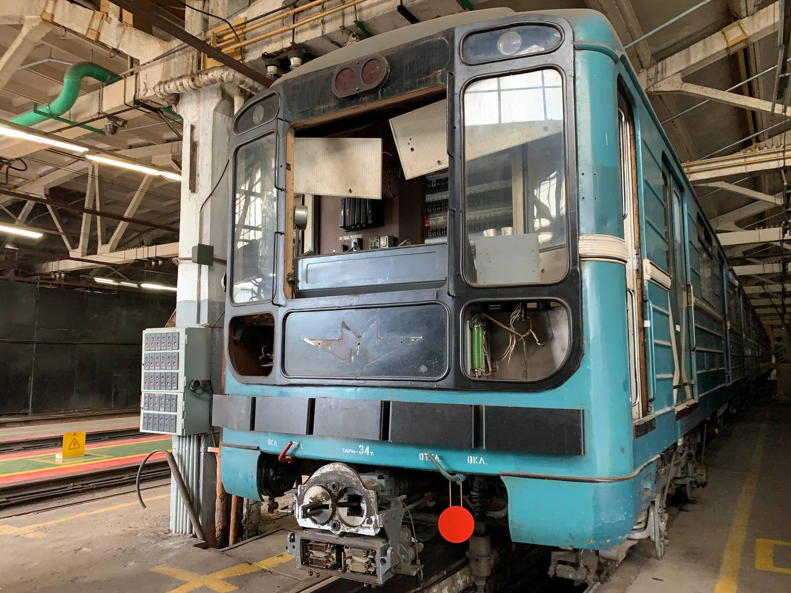
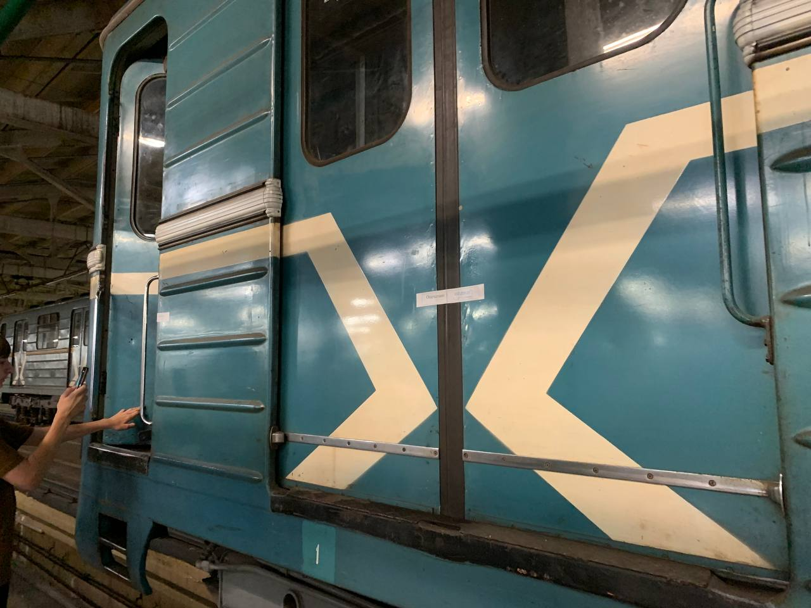
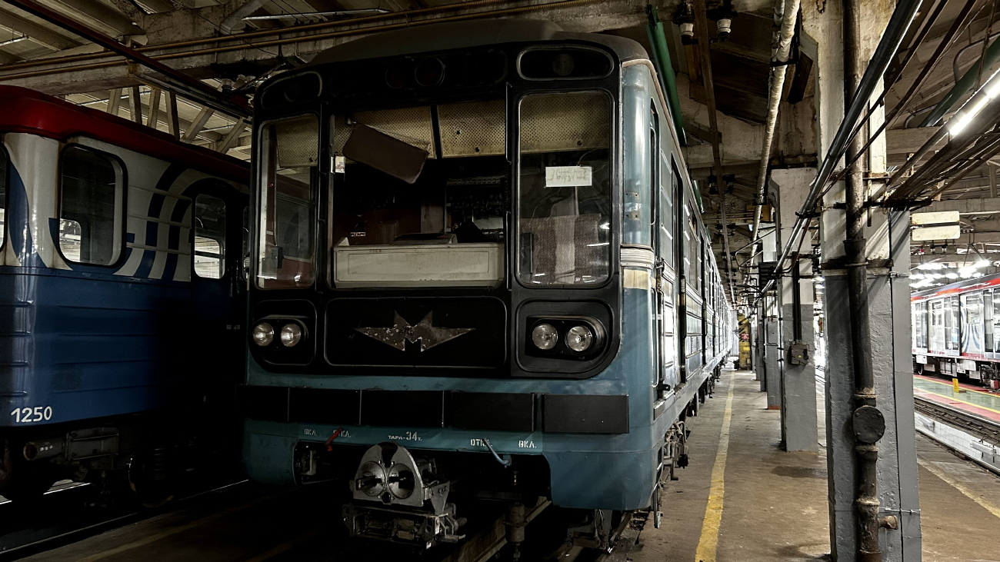
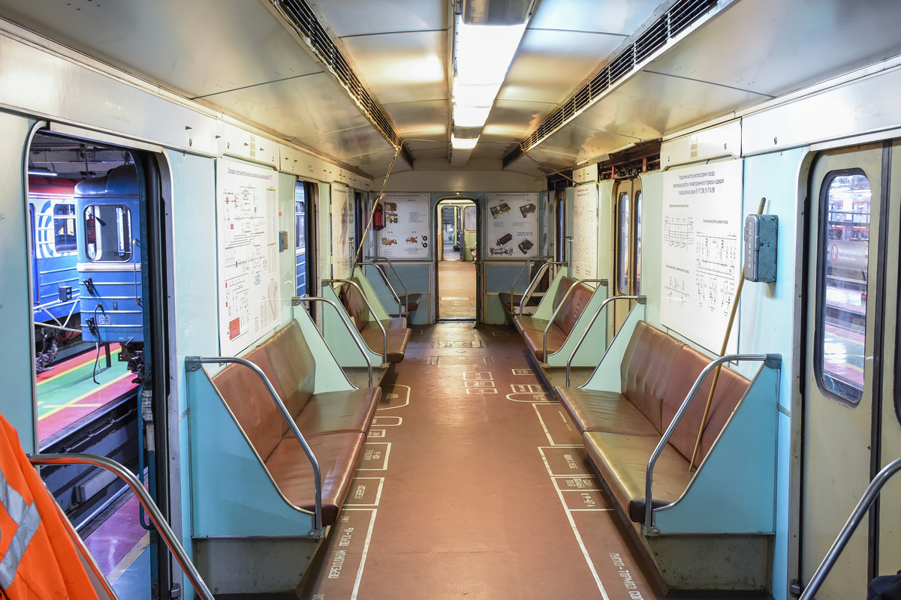
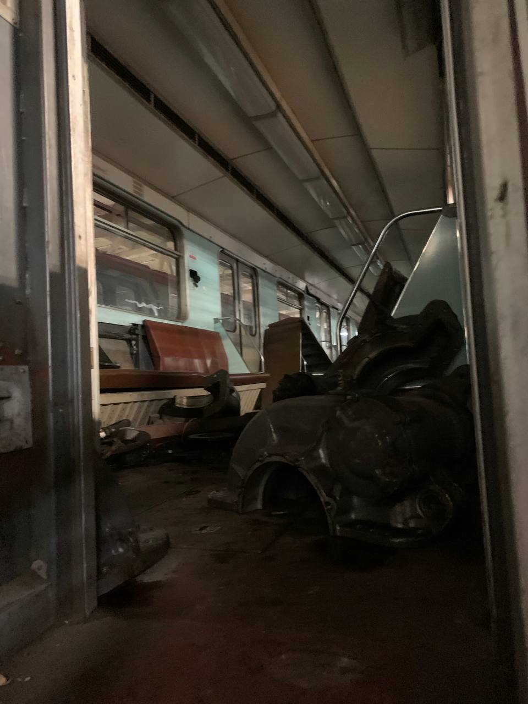
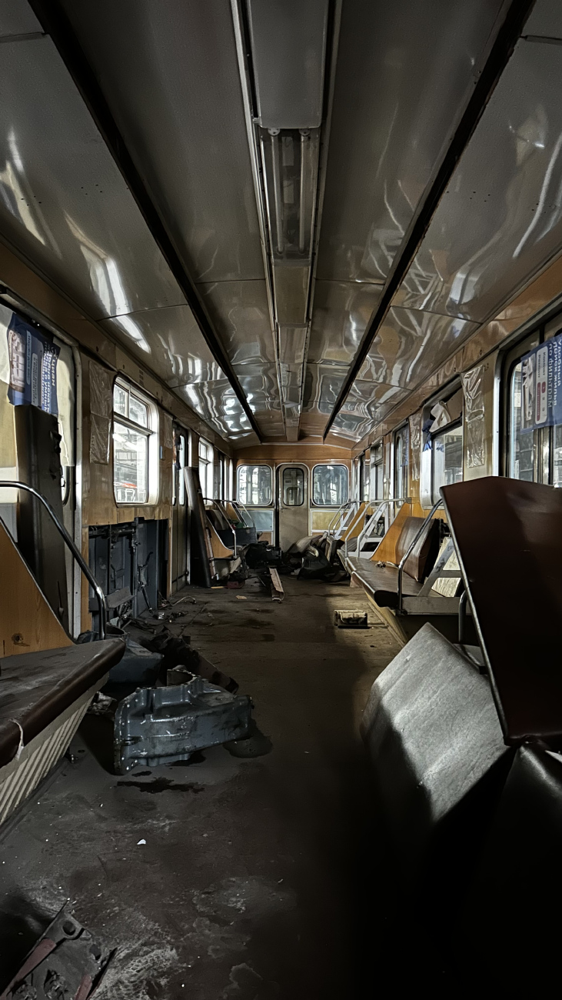

Состав-тренажёр 8712-7919-0065
Уникальный состав-тренажёр, который можно встретить в ТЧ-5 «Калужское». В него входят вагоны 8712, 7919 и 0065.
8712 и 0065 сохранили оригинальный салон и маску 2-2-2. 8712 сохранил оригинальную расцветку. Часть оборудования выведена в салон.
Внимание: Состав ожидает утилизации. Скоро его могут утилизировать.
Общая информация
| Параметр | Значение |
|---|---|
| Депо | ТЧ-5 «Калужское» |
| Построен | 03.1986 — 05.1986 |
| Состояние | Выведен из эксплуатации / ожидание исключения |
| Назначение | Служебный |
| Примечание | Тренажёр |
Текущее формирование
8712 — 7919 — 0065
Вагоны состава
Вагон № 8712
| Параметр | Значение |
|---|---|
| Модель | 81-717 (ЛВЗ) |
| Заводской № | 21272 |
| Построен | 03.1986 |
| Депо | ТЧ-5 «Калужское» |
| Назначение | Служебный |
| Примечание | Тренажёр |
| Состояние | Выведен из эксплуатации / ожидание исключения |
История: 04.1986 — поступил в депо приписки ТЧ-2 «Сокол»; С 30.06.1997 — вагон-тренажёр.
Особенности: Часть оборудования выведена в салон.
Вагон № 7919
| Параметр | Значение |
|---|---|
| Модель | 81-714 (ЛВЗ) |
| Заводской № | 21330 |
| Построен | 04.1986 |
| Депо | ТЧ-5 «Калужское» |
| Назначение | Служебный |
| Примечание | Тренажёр |
| Состояние | Выведен из эксплуатации / ожидание исключения |
История: 06.1986 — поступил в депо приписки ТЧ-2 «Сокол»; С 30.06.1997 — вагон-тренажёр ТЧ-5 «Калужское».
Экстерьер: Окрас бирюзового цвета с белыми полосами по борту; три ребра жёсткости; расположение сигнальных ламп: горизонтальное.
Интерьер: Поручни старого образца; диваны, обшитые кожзаменителем; пластик бирюзового цвета (за исключением наддверных панелей); освещение: лампы типа ЛПВ-01; схемы станций и оборудования в салоне.
Вагон № 0065
| Параметр | Значение |
|---|---|
| Модель | 81-717 (ММЗ) |
| Построен | 05.1986 |
| Депо | ТЧ-5 «Калужское» |
| Назначение | Служебный |
| Примечание | Тренажёр |
| Состояние | Выведен из эксплуатации / ожидание исключения |
История: 05.1986 — поступил в депо приписки ТЧ-2 «Сокол»; С 30.06.1997 — вагон-тренажёр.
Особенности: Оборудован стендом для закоротки; часть оборудования выведена в салон.
Уникальность состава
🪑 Оригинальный салон
8712 и 0065 сохранили оригинальный салон и маску 2-2-2.
🎨 Оригинальная расцветка
8712 сохранил оригинальную расцветку.
⚙️ Оборудование в салоне
Часть оборудования выведена в салон.
🔧 Стенд для закоротки
Вагон 0065 оборудован стендом для закоротки.
Внимание: Уникальный состав-тренажёр можно встретить в ТЧ-5 «Калужское». Скоро его могут утилизировать.
Фотогалерея

📸 Транспортник Москвы / Вова

📸 Транспортник Москвы / Вова

📸 Welder

📸 Александр Л 2016

📸 Транспортник Москвы / Вова

Специально для тех, кто думает, что всё сохранилось. Если для вас это «сохранилось», то это весьма печально. В состоянии «новых» эти вагоны были ещё в ноябре 2023 года. Всё было целое и на месте. Сейчас это реально хлам.
📸 Welder
Нажмите на фото для увеличения
«Состав-тренажёр 8712-7919-0065 — это уникальный памятник истории московского метро. Сохранившиеся вагоны с оригинальным салоном и маской 2-2-2 — настоящая редкость, которую скоро можно потерять навсегда».